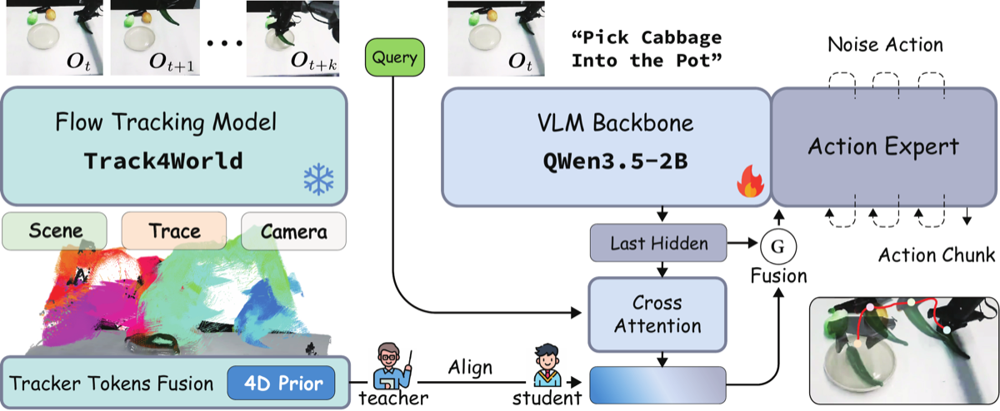
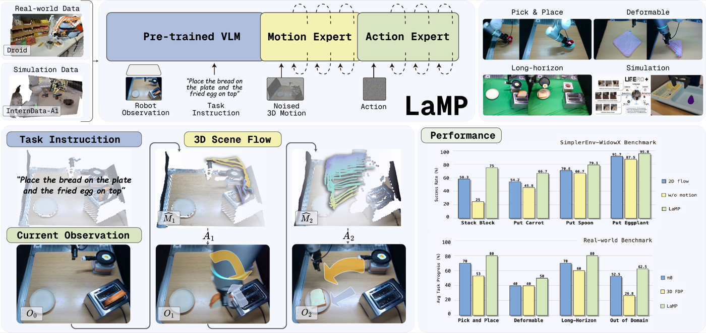
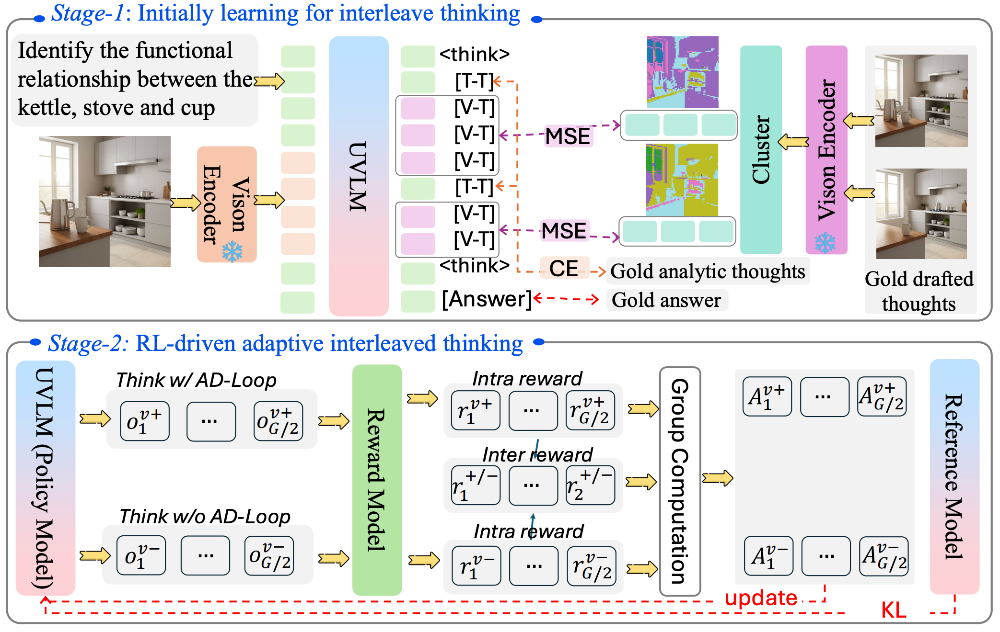
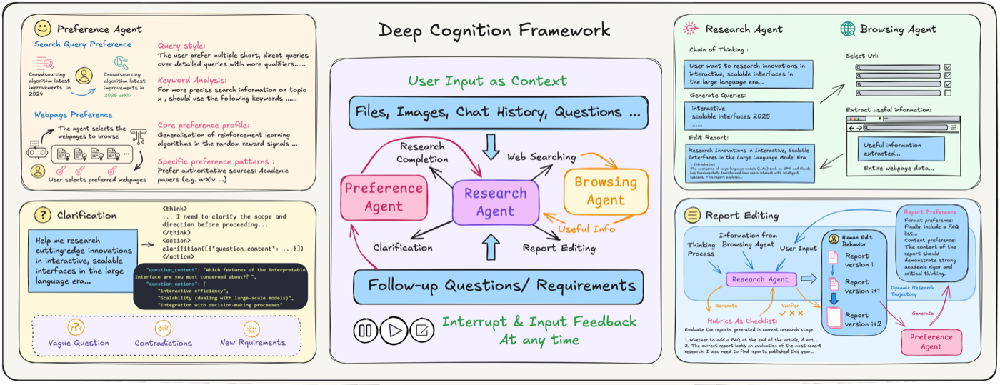
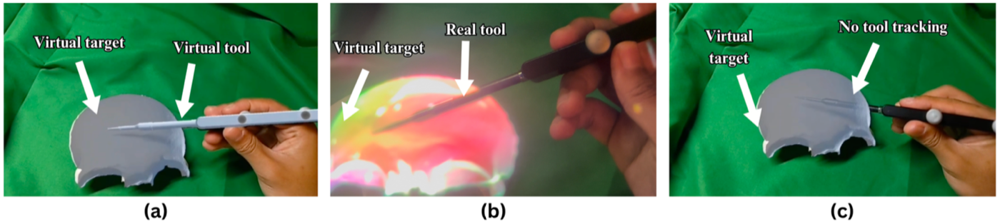
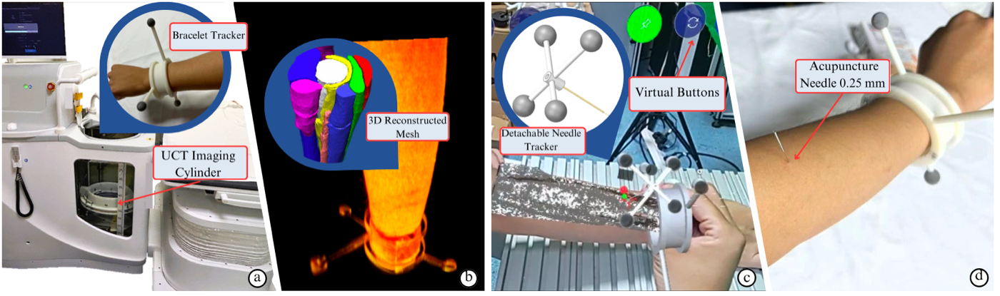
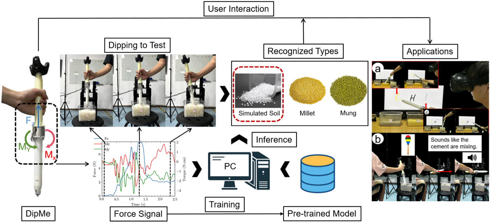
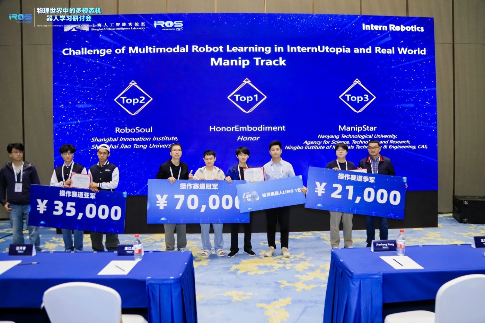

About
I am currently a PhD student at the Shanghai Innovation Institute (SII), jointly trained with Southeast University (SEU). I am primarily advised by Prof. Lixin Yang and Prof. Cewu Lu, with Prof. Lifeng Zhu as my joint-training advisor. I am also working closely with Yutao Sun (THU) on unified multimodal architectures and autoregressive video generation. I got my B.Eng at the School of Instrument Science and Engineering, Southeast University in 2023. My research interests include Embodied AI & Robot Learning, Multimodal Understanding & Generation. I'm always looking for related collaboration. If you are interested in chatting with me, feel free to drop me an email.
Interests
Education
Experiences
News
Recent updates- Our paper Track4Action is now available on arXiv.
- One paper accepted to ECCV 2026 🇸🇪.
- One paper accepted to ICLR 2026 🇧🇷.
- As Team Leader, won 3rd Place in the IROS 2025 🇨🇳 InternUtopia & Real-World Challenge, Track 1 (Manipulation).
- One paper accepted to ISMAR 2025 🇰🇷, and nominated for Best Poster Award.
- One paper accepted to IEEE VR 2025 🇫🇷, and selected for Oral presentation.
- Won Outstanding Award (Top 5%) in the 18th Challenge Cup National College Student Extracurricular Academic and Technological Works Competition.
Publications







Paper Notes
Notes on papers I have read and want to share, focusing on the ideas, figures, equations, and implementation details worth revisiting.
Honors & Awards
Selected honorsOutstanding Award (Top 5%)
18th "Challenge Cup" National College Student Extracurricular Academic and Technological Works Competition.
Project: 力感智能月面轻巧型采样装置
Team: Ziyi Zhao, Yibing Yan, Xinkai Wang, Ruotian Chen, Mingyu Li, Yufei Yan, Fengyuan Liu, Yifei Xing.

Third Place Award, Track 1: Manipulation
InternUtopia & Real-World Challenge on Multimodal Robot Learning.
Team RoboSoul: Xinkai Wang, Chenyi Wang, Fucheng Zhang, Xinyu Zhan, Bokai Lin, Yifu Xu.